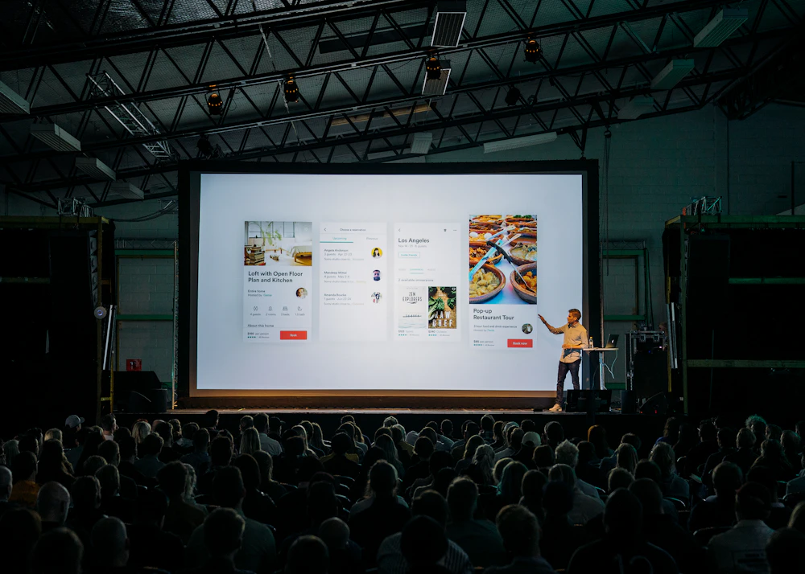

See the strongest teams first.
For angels and pre-seed funds who want an early look at student founders working on frontier problems, and for later-stage investors who want to mentor, judge and bring problems from their portfolio.

Straight talk
Early teams, matched to the right stage.
BQ teams are at idea or prototype stage, which suits angels and pre-seed funds. Later-stage investors help in other ways, and often meet people they want to hire.
-
Angel and pre-seed
Invest early
Meet the strongest chapter teams and BQ Fellows as they start building. Introductions only when a team is ready, and only with your say-so.
-
Any stage
Mentor a pod
Stay with one team across a sprint and show them how investors actually think about a market.
-
Any stage
Judge Demo Night
Help choose the teams that go further, and give them feedback they can use.
-
Series A and later
Bring portfolio problems
Your portfolio companies bring live problems to a chapter or a hackathon, and meet people they may want to hire.

How introductions work
Introductions are warm, selective and on your terms.
- Chosen teamsChapter teams and Fellows are chosen for what they built, how consistently they showed up and what their pod says, rather than on a pitch deck alone.
- Matched to fitWe introduce someone only to the few investors they fit. We don’t send mass emails or forward decks in bulk.
- Your termsYou decide what you want to see, which sectors and how often.
Join the investor network.
Tell us the stages and sectors you back, and how you would like to be involved.